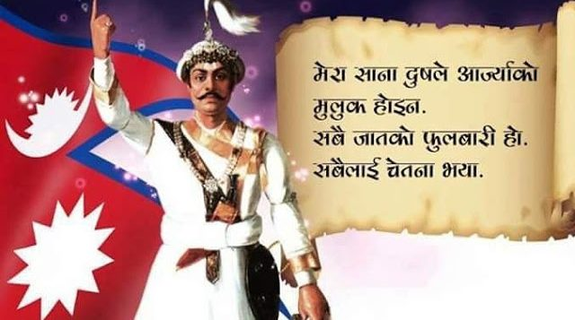

Modern history of Nepal

After decades of rivalry between the medieval kingdoms,
modern Nepal was unified in the latter half of the 18th century, when Prithvi Narayan Shah, the ruler
of the small principality of Gorkha, formed a unified country from a number of independent hill high
states. After the death of Prithvi Narayan Shah, the Shah dynasty began to expand their kingdom into
much of the Indian subcontinent. Between 1788 and 1791, during the Sino-Nepalese War, Nepal invaded
Tibet and robbed Tashilhunpo Monastery in Shigatse. Alarmed, the Qianlong Emperor of the Chinese Qing
Dynasty appointed Fuk'anggan commander-in-chief of the Tibetan campaign; Fuk'anggan signed a treaty
to protect his troops thus attaining a draw.
Bhakti Thapa leading Gorkha men at Anglo-Nepalese War
After 1800, the heirs of Prithvi Narayan Shah proved unable to maintain firm political control over
Nepal. A period of internal turmoil followed. The rivalry between Nepal and the British East India
Company over the princely states bordering Nepal and British-India eventually led to the
Anglo-Nepalese War